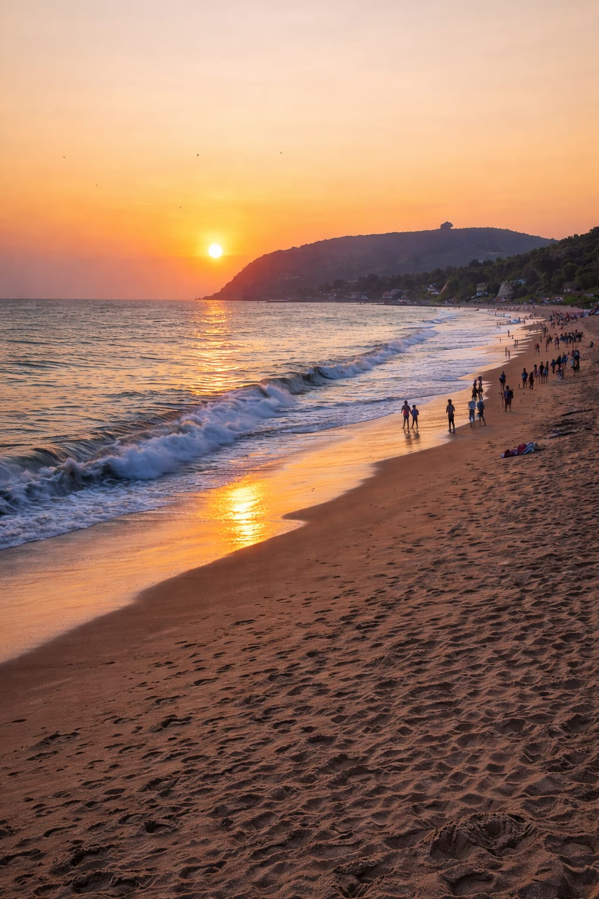
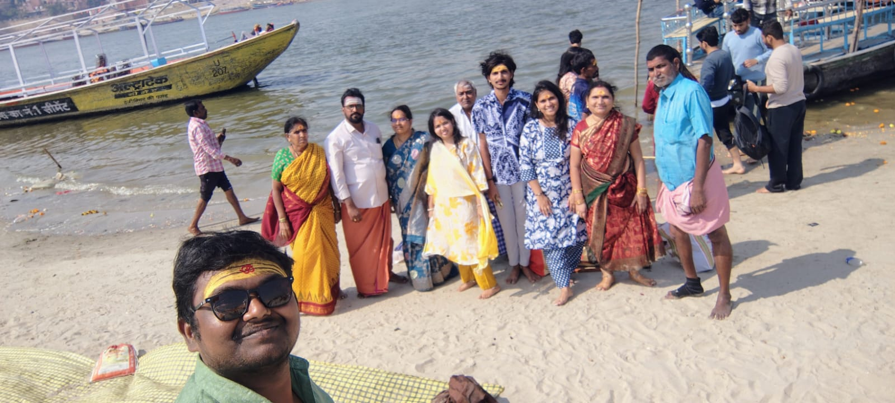
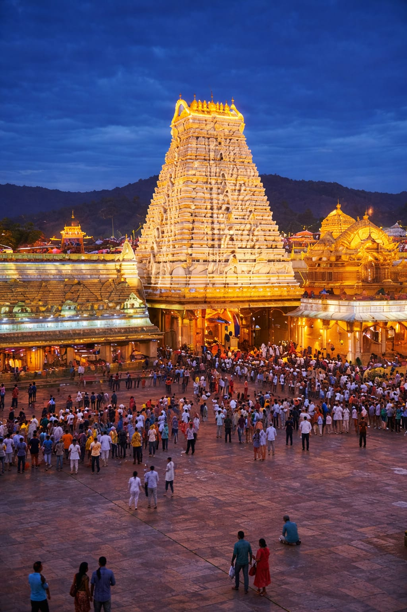
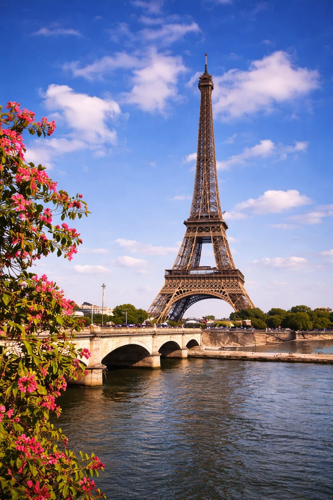
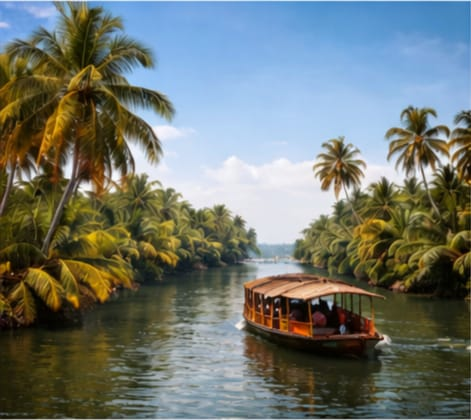
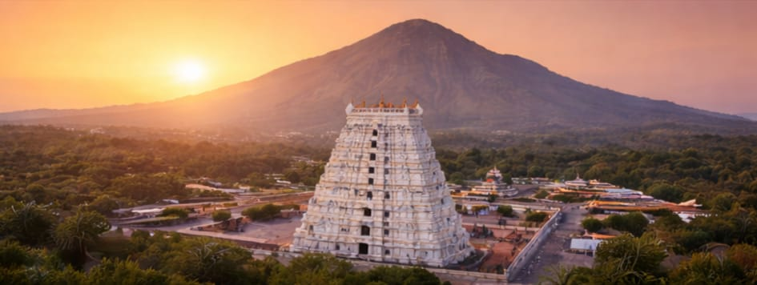

Places I Visited

Vizag
I loved visiting vizag and beach and enjoying the sunset. I visited the places like RK beach,kailasagiri,borra caves,araku valley with my family members. This is the first trip i have went with my family when i grew up the journey was amazing and i have spent a healthy time with my family members. It is really a very beautiful and amazing expirience.In my life i have seen the original live anakondas for the first time in vizag zoo. And the kailasagiri temple was awsome it was very peaceful.overall i enjoyed my trip.

kaasi
Visiting kaasi was a dream for me since childhood.Finally,my family agreed and took me there. The atmosphere of the places was very speacial.walking through the small narrow streets and ghats felt like a unique experience. */The "Ganga Aarti" was a goosbumps moment for me.Visiting the "Kashi VISHWASHANTH"temple and having the sparsa dharshan was an unforgettable moment. I even had tears in my eyes with full of happiness and devotion.It was truly a wonderful and emotional expirience for me.

Tirupati
A spiritual place I visited with my family.This is the continution trip of vizag. Visiting trupati is my first time expirience.And i had a very nice dharshan with my family. standing in the queue for the long time is very much painful but when we went closer to lord "VENKATESWARA SWAMI"I have forgetten all that pain. It was a goosbump expirience.I think it my luck on that day beacause i have watched him very longtime. overall it was a very nyc journey.
Places I Want To Visit

Paris
Paris is the capital of France and is known as the"City of Love." It is famous for Eiffel tower,beautiful streets,and the meseums. I would love to visit paris to see the Eiffel tower and experience the culture and beauty of the city. i wil definetly go to paris when i settle im my life.

Kerala
I love visiting kerela it is known as "God's Own Country." I like the backwaters green lanscapes and beautiful houseboats.I like the tradition and the way they gets ready. I want to visit kerela to enjoy the peaceful nature and explore its unique culture and food.

Arunachalam
IArunachalam is a sacred place in Tamil Nadu famous for the Arunachaleswarar Temple dedicated to Lord Shiva. Many devotees perform Girivalam around the holy hill. I want to visit Arunachalam to experience the spiritual atmosphere and peace of the place.